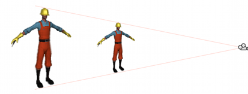

Dolly Zoom (AKA the "Trombone" Effect)
Dolly Zoom is the well-known visual effect where the camera simultaneously moves towards a target object and zooms out from it. The result is that the object appears roughly the same size but all the other objects in the scene change perspective. Done subtly, dolly zoom has the effect of highlighting the target object, since it is the only thing in the scene that isn't shifting position in the image. Alternatively, the zoom can be deliberately performed quickly to create the impression of disorientation.
An object that just fits within the frustum vertically will occupy the whole height of the view as seen on the screen. This is true whatever the object's distance from the camera and whatever the field of view. For example, you can move the camera closer to the object but then widen the field of view so that the object still just fits inside the frustum's height. That particular object will appear the same size onscreen but everything else will change size as the distance and FOV change. This is the essence of the dolly zoom effect.

Creating the effect in code is a matter of saving the height of the frustum at the object's position at the start of the zoom. Then, as the camera moves, its new distance is found and the FOV adjusted to keep it the same height at the object's position. This can be accomplished with the following code:
using UnityEngine;
using System.Collections;
public class ExampleScript : MonoBehaviour {
public Transform target;
public Camera camera;
private float initHeightAtDist;
private bool dzEnabled;
// Calculate the frustum height at a given distance from the camera.
void FrustumHeightAtDistance(float distance) {
return 2.0f * distance * Mathf.Tan(camera.fieldOfView * 0.5f * Mathf.Deg2Rad);
}
// Calculate the FOV needed to get a given frustum height at a given distance.
void FOVForHeightAndDistance(float height, float distance) {
return 2.0f * Mathf.Atan(height * 0.5f / distance) * Mathf.Rad2Deg;
}
// Start the dolly zoom effect.
void StartDZ() {
var distance = Vector3.Distance(transform.position, target.position);
initHeightAtDist = FrustumHeightAtDistance(distance);
dzEnabled = true;
}
// Turn dolly zoom off.
void StopDZ() {
dzEnabled = false;
}
void Start() {
StartDZ();
}
void Update () {
if (dzEnabled) {
// Measure the new distance and readjust the FOV accordingly.
var currDistance = Vector3.Distance(transform.position, target.position);
camera.fieldOfView = FOVForHeightAndDistance(initHeightAtDist, currDistance);
}
// Simple control to allow the camera to be moved in and out using the up/down arrows.
transform.Translate(Input.GetAxis("Vertical") * Vector3.forward * Time.deltaTime * 5f);
}
}
C# script example
var target: Transform;
private var initHeightAtDist: float;
private var dzEnabled: boolean;
// Calculate the frustum height at a given distance from the camera.
function FrustumHeightAtDistance(distance: float) {
return 2.0 * distance * Mathf.Tan(camera.fieldOfView * 0.5 * Mathf.Deg2Rad);
}
// Calculate the FOV needed to get a given frustum height at a given distance.
function FOVForHeightAndDistance(height: float, distance: float) {
return 2 * Mathf.Atan(height * 0.5 / distance) * Mathf.Rad2Deg;
}
// Start the dolly zoom effect.
function StartDZ() {
var distance = Vector3.Distance(transform.position, target.position);
initHeightAtDist = FrustumHeightAtDistance(distance);
dzEnabled = true;
}
// Turn dolly zoom off.
function StopDZ() {
dzEnabled = false;
}
function Start() {
StartDZ();
}
function Update () {
if (dzEnabled) {
// Measure the new distance and readjust the FOV accordingly.
var currDistance = Vector3.Distance(transform.position, target.position);
camera.fieldOfView = FOVForHeightAndDistance(initHeightAtDist, currDistance);
}
// Simple control to allow the camera to be moved in and out using the up/down arrows.
transform.Translate(Input.GetAxis("Vertical") * Vector3.forward * Time.deltaTime * 5);
}
JS script example